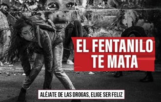

la causa en mexico
Entorno Familiar: La falta de supervisión, la violencia intrafamiliar, antecedentes de adicción en padres o hermanos y la mala integración familiar son determinantes principales en la juventud.
Traumas y Violencia: Vivir situaciones de abuso, negligencia o exposición continua a la violencia genera un trauma que incrementa drásticamente la vulnerabilidad ante la adicción
Traumas y Violencia: Vivir situaciones de abuso, negligencia o exposición continua a la violencia genera un trauma que incrementa drásticamente la vulnerabilidad ante la adicción
es recomendable consultar la información oficial emitida por la Comisión Nacional de Salud Mental y Adicciones (CONASAMA)
La drogadicción en México es un fenómeno multifactorial impulsado por la desintegración familiar, la presión social, y la alta disponibilidad de drogas sintéticas a bajo costo. A esto se suman factores estructurales como la pobreza y la falta de oportunidades para los jóvenes que generan una percepción desesperanzada del futuro.La cercanía y fácil acceso a sustancias de bajo costo—como el cristal o la metanfetamina—han provocado un aumento drástico en el consumo en diversas regiones del país

Línea de la Vida (CONASAMA): Línea nacional de atención telefónica para el apoyo emocional y manejo de adicciones (marca al servicio de atención telefónica correspondiente)Programas de Internamiento y Ambulatorios: Los centros de rehabilitación, tanto residenciales como ambulatorios, ofrecen espacios seguros para el desintoxicado y la reinserción social Apoyo Farmacológico: Uso supervisado de medicamentos y terapias de sustitución para manejar los síntomas de abstinencia de drogas como opioides o estimulantes.